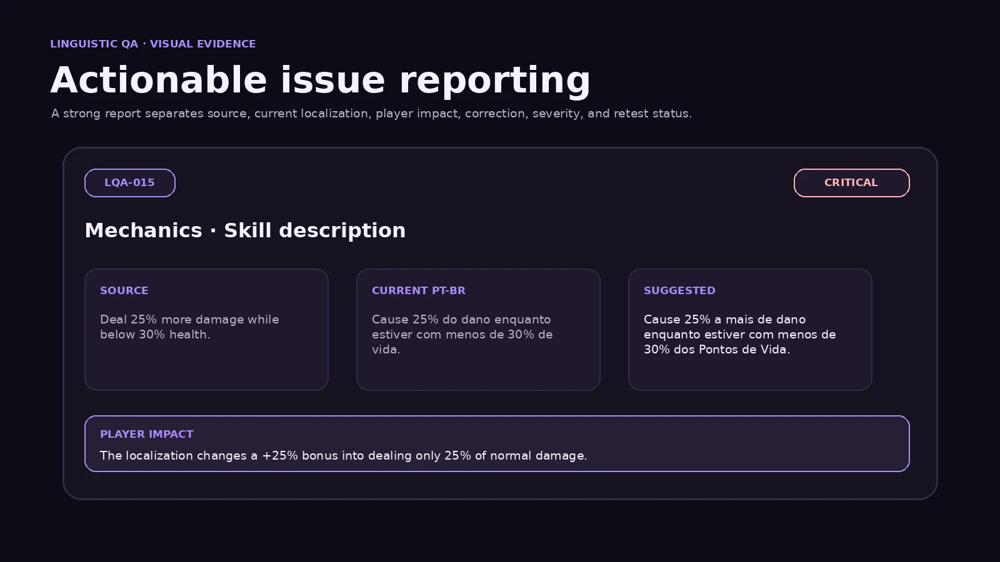
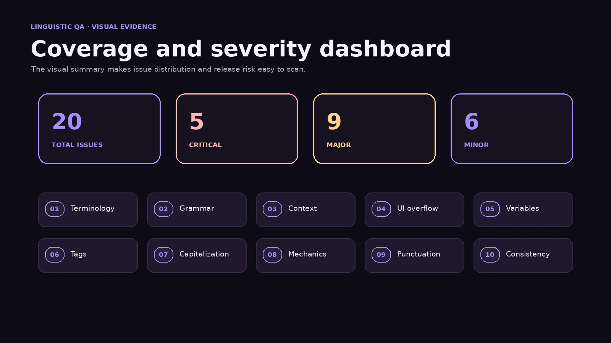

Linguistic QA case study
In-context LQA
& Bug Reporting
An English-to-Brazilian Portuguese quality-assurance study covering terminology, context, UI constraints, variables, tags, grammar, mechanics, severity classification, and actionable correction reports.
Project overview
Quality assurance beyond proofreading.
The review tests whether the localized build is linguistically natural, mechanically accurate, technically functional, and readable inside the actual interface.
Emberwake is a fictional fantasy action RPG created solely for this portfolio sample. All strings, screens, bugs, corrections, and reports are original examples.
The test pass covered menus, tutorials, combat objectives, inventory, quests, item tooltips, character information, codex entries, settings, and gameplay notifications at 1920 × 1080 and 1280 × 720.
Visual evidence
QA findings made easy to scan.
Original mock-ups summarise a complete issue report and the distribution of findings across the test pass.


My role
Reviewer, bug reporter, and localization specialist.
The work combines source-target comparison, in-context testing, functional verification, severity assessment, correction proposals, and retest planning.
Results
20 documented issues across ten categories.
Critical findings affected runtime values, formatting code, or gameplay meaning. Major and Minor findings covered context, terminology, interface constraints, grammar, punctuation, and consistency.
Fixed
15
Corrections applied and verified in the reviewed build.
Pending retest
5
Critical fixes that require validation in the next build.
Coverage
Ten categories reviewed in context.
Terminology
Approved glossary terms, naming conventions, and unapproved variants.
Grammar
Agreement, syntax, number, gender, and natural Brazilian Portuguese.
Context
Meaning selected according to the actual screen, action, and gameplay situation.
UI overflow
Clipping, truncation, wrapping, and fixed-width interface constraints.
Variables
Runtime placeholders, quantities, player names, rewards, and dynamic values.
Tags
Markup, styling tags, input prompts, and non-translatable code.
Capitalization
Sentence case, headings, labels, and style-guide compliance.
Mechanics
Percentages, conditions, durations, bonuses, penalties, and rule accuracy.
Punctuation
Colons, question marks, spacing, and interface punctuation patterns.
Consistency
Repeated concepts, class names, objects, and cross-screen terminology.
Severity model
Priority based on player impact.
Function or mechanics
Broken variables, invalid tags, missing essential values, or translations that change gameplay rules.
Meaning or usability
Serious contextual errors, glossary conflicts, misleading wording, or severe UI presentation problems.
Language or style
Grammar, punctuation, capitalization, and style issues that do not prevent comprehension.
Selected reports
One representative finding from each category.
Each report separates the source, current localization, issue, correction, expected result, and actual result.
Terminology · Inventory
Issue: The item name does not follow the approved glossary term used elsewhere in the build.
Expected: The approved term Poção de Cura is used consistently.
Actual: The item is displayed as Poção de Saúde.
Grammar · Loot Notification
Issue: The noun does not agree with the singular numeral.
Expected: Singular agreement is used with 1.
Actual: The plural form moedas is displayed.
Context · Pause Menu
Issue: The translation uses the noun meaning professional résumé instead of the gameplay action.
Expected: The button resumes gameplay.
Actual: The button is labelled Currículo.
UI overflow · Settings
Issue: The localized label exceeds the fixed-width tab and overlaps the adjacent icon.
Expected: The label fits without clipping or overlap.
Actual: The string overlaps the tab icon.
Variables · Quest Reward
Issue: The protected variable name was translated, so the runtime value is not injected.
Expected: The numerical reward replaces {amount}.
Actual: The literal text {quantidade} appears on screen.
Tags · Tutorial
Issue: The markup tags were translated and are no longer recognised by the UI parser.
Expected: The interaction command is highlighted in yellow.
Actual: Raw markup is displayed in the tutorial text.
Capitalization · Quest Notification
Issue: The notification heading does not follow the approved sentence-case pattern.
Expected: The first word of the heading is capitalised.
Actual: The heading begins with a lowercase letter.
Mechanics · Skill Description
Issue: The localization changes a +25% damage bonus into dealing only 25% of normal damage.
Expected: The description communicates a 25% increase.
Actual: The description implies damage is reduced to 25%.
Punctuation · Quest Summary
Issue: The colon separating the label and value is missing.
Expected: The label and value are separated by a colon.
Actual: The punctuation is missing.
Consistency · World / Tutorial
Issue: Two different translations are used for the same gameplay object.
Expected: The same approved term is used in both locations.
Actual: Two variants are displayed.
Complete issue log
A traceable bug database.
The table below contains all 20 findings. The downloadable CSV in the repository includes full reproduction steps and expected-versus-actual fields.
| ID | Category | Severity | Screen | Issue | Suggested correction | Status |
|---|---|---|---|---|---|---|
| LQA-001 | Terminology | Major | Inventory | The item name does not follow the approved glossary term used elsewhere in the build. | Poção de Cura | Fixed |
| LQA-002 | Terminology | Major | World Map | The string conflicts with the approved navigation term used in tutorials and map prompts. | Viagem Rápida | Fixed |
| LQA-003 | Grammar | Minor | Loot Notification | The noun does not agree with the singular numeral. | Você encontrou 1 moeda. | Fixed |
| LQA-004 | Grammar | Minor | Equipment | The adjective does not agree with the feminine noun espada. | A espada lendária foi equipada. | Fixed |
| LQA-005 | Context | Major | Pause Menu | The translation uses the noun meaning professional résumé instead of the gameplay action. | Continuar | Fixed |
| LQA-006 | Context | Major | Social Menu | The string refers to the player's adventuring group, not a celebration. | Grupo | Fixed |
| LQA-007 | UI overflow | Major | Settings | The localized label exceeds the fixed-width tab and overlaps the adjacent icon. | Acessibilidade | Fixed |
| LQA-008 | UI overflow | Major | Inventory Toast | The toast exceeds two lines and is truncated before the final word. | Inventário cheio. | Fixed |
| LQA-009 | Variables | Critical | Quest Reward | The protected variable name was translated, so the runtime value is not injected. | Você recebeu {amount} moedas. | Retest |
| LQA-010 | Variables | Critical | Combat Objective | The quantity variable was removed, preventing the objective from displaying the required target. | Derrote {count} inimigos. | Retest |
| LQA-011 | Tags | Critical | Tutorial | The markup tags were translated and are no longer recognised by the UI parser. | <color=#FFCC00>Segure [E]</color> para interagir. | Retest |
| LQA-012 | Tags | Major | Codex | The closing bold tag is missing, causing the remaining article to stay bold. | <b>Fraqueza:</b> Gelo | Fixed |
| LQA-013 | Capitalization | Minor | Quest Notification | The notification heading does not follow the approved sentence-case pattern. | Nova missão | Fixed |
| LQA-014 | Capitalization | Minor | Character Sheet | The label uses all caps while the interface style guide requires sentence case. | Pontos de vida | Fixed |
| LQA-015 | Mechanics | Critical | Skill Description | The localization changes a +25% damage bonus into dealing only 25% of normal damage. | Cause 25% a mais de dano enquanto estiver com menos de 30% dos Pontos de Vida. | Retest |
| LQA-016 | Mechanics | Critical | Item Tooltip | The translation changes a two-second reduction into setting every cooldown to two seconds. | Reduz em 2 segundos o tempo de recarga das habilidades. | Retest |
| LQA-017 | Punctuation | Minor | Quest Summary | The colon separating the label and value is missing. | Recompensa: 500 XP | Fixed |
| LQA-018 | Punctuation | Minor | Confirmation Dialog | An incorrect space appears before the question mark. | Tem certeza? | Fixed |
| LQA-019 | Consistency | Major | World / Tutorial | Two different translations are used for the same gameplay object. | Ponto de Salvamento | Fixed |
| LQA-020 | Consistency | Major | Class Selection / Codex | The class name changes between character creation and codex entries. | Patrulheiro | Fixed |
Workflow
From preparation to retest.
- PrepareReview terminology, style rules, protected variables, markup, platform, build, and test scope.
- TestNavigate the localized build, trigger gameplay states, compare source and target, and test narrow UI layouts.
- ClassifyAssign category, severity, location, reproduction steps, expected result, and actual result.
- CorrectProvide a concise suggested localization that preserves function, terminology, and interface constraints.
- RetestVerify the fix in the next build and check related strings for regression or inconsistency.
QA checklist
Linguistic and functional validation.
Completed checks
- Meaning and context reviewed
- Grammar and punctuation checked
- Terminology compared with glossary
- Variables and tags preserved
- Numbers and mechanics validated
- UI overflow tested at two resolutions
- Expected and actual results separated
- Suggested corrections supplied
Next validation pass
- Retest all Critical fixes
- Run regression review on related strings
- Test controller-specific prompts
- Verify pluralisation with dynamic values
- Test accessibility text scaling
- Add neutral screenshots or mock-ups
Outcome
Actionable reports for a release-ready localization.
The final deliverables provide a traceable issue database, severity classification, reproduction steps, correction proposals, fix status, and evidence of in-context review.
The case study demonstrates that linguistic QA protects not only language quality, but also interface function, player decisions, and mechanical accuracy.
Technical documentation
Review the full QA report and issue log.
The repository contains the Markdown report and a UTF-8 CSV with all 20 issues, including full reproduction steps, expected results, actual results, and suggested corrections.